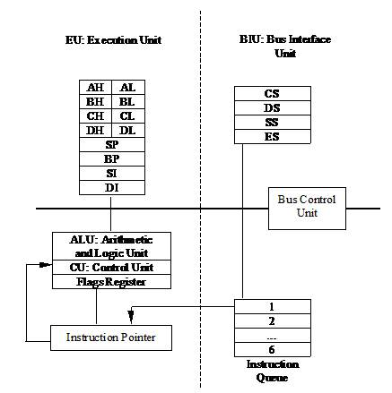
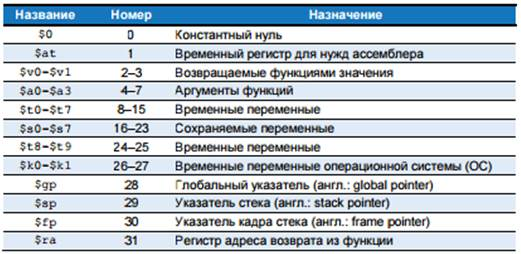
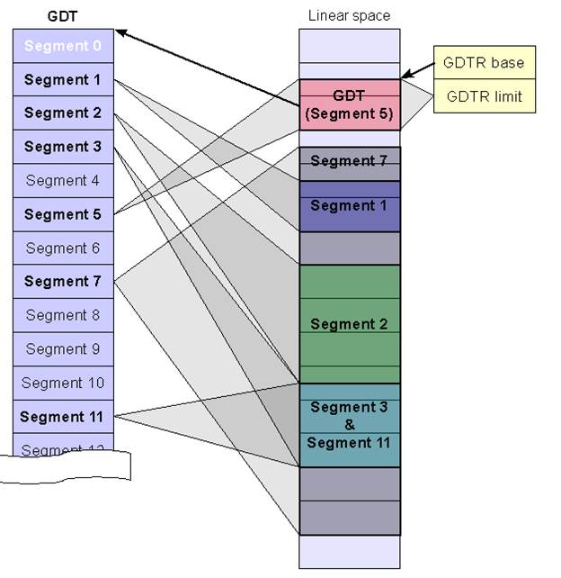
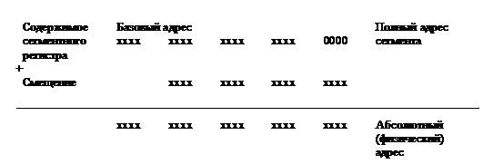

электронный ресурс по учебной дисциплине 1-40 05 01-09 "Информационные системы и технологии (в обеспечении промышленной безопасности)"
|
||
| Оглавление | Программа | Теория | Практика| Контроль знаний | Об авторах | ||
Раздел 1. Процессоры
INTEL
Тема 1
Введение. Ассемблер. Регистры процессора
1. Введение
В общем смысле архитектура существует у любого достаточно сложного
объекта, состоящего из отдельных, взаимодействующих между собой частей (компонентов).
Так, определяя на бытовом уровне понятие "архитектура ЭВМ", обычно
говорят, что архитектура – это все компоненты компьютера, их устройство,
выполняемые ими функции, а также взаимосвязи между этими компонентами. Сейчас
надо разобраться, почему такое поверхностное определение архитектуры не будет
нас удовлетворять.
Дело в том, что понятие архитектуры чего-либо существует не само по себе,
а только в паре с другим понятием. Такая ситуация встречается достаточно часто.
Известно, например, что понятие алгоритм неразрывно связано с понятием
исполнитель алгоритма. При этом одна и та же запись для одного исполнителя
будет алгоритмом, а для другого – нет (например, если этот другой исполнитель
не умеет выполнять некоторые предписания в записи алгоритма).
Так и в рассматриваемом случае понятие архитектуры неразрывно связано с
тем человеком (или теми людьми), которые изучают или рассматривают эту
архитектуру. Ясно, что для разных людей архитектура одного и того же объекта
может выглядеть совершенно по-разному. Так, например, обычный жилец
многоэтажного дома не без основания полагает, что этот дом состоит из
фундамента, стен и крыши, имеет этажи, на каждом этаже есть квартиры,
присутствует лестница, лифт, в квартирах есть комнаты, окна, двери и т.д.
Совсем по-другому видит архитектуру этого же дома инженер, ответственный
за его эксплуатацию. Он, например, также знает, что некоторые перегородки между
комнатами можно убрать при перепланировке квартиры, а другие перегородки
являются несущими, если их убрать – дом рухнет.
Инженер знает, где внутри стен проходят электрические провода, трубы
водяного отопления, как обеспечивается противопожарная безопасность, каким
образом к дому подводятся инженерные коммуникации и многое другое.
1. Внешний уровень. На этом уровне видит архитектуру легкового автомобиля
обычный пассажир. Он знает, что машина имеет колёса, кузов, сиденья, руль,
мотор и другие части. Он понимает, что для работы автомобиля в него надо
обязательно заливать бензин, знает назначение дворников на ветровом стекле, ремней
безопасности и т.д. И этого эму вполне достаточно, чтобы успешно пользоваться
машиной, главное – правильно назвать водителю нужный адрес.
2. Концептуальный уровень. Примерно на этом уровне видит архитектуру
машины её водитель. В отличие от пассажира он знает, что в его автомобиль нужно
заливать вовсе не бензин, а дизельное топливо (а для электромобиля нужно вообще
"заливать" только электричество).
Кроме того, в автомобиль необходимо ещё заливать масло определенной марки
и специальную воду для стеклоочистителей. Водитель знает назначение всех
органов управления машиной, марку топлива, температуру окружающего воздуха,
ниже которой необходимо заливать в машину особый сорт масла и ставить зимнюю
резину т.д. Обычно водитель обладает также некоторыми знаниями, позволяющими
выполнить несложный ремонт машины. Ясно, что наш водитель видит архитектуру
своего автомобиля совсем иначе, нежели обычный пассажир.
3. Внутренний уровень. На этом уровне автомобиль видит
инженер-конструктор, ответственный за его разработку. Он знает марку металла,
из которого изготавливаются цилиндры двигателя, зависимость отдаваемой мотором
мощности от марки топлива, допустимую нагрузку на отдельные узлы автомобиля,
антикоррозийные свойства внешнего корпуса, особенности работы системы безопасности,
настройки бортового компьютера и многое другое. Ясно, что обычный водитель
машины, а тем более её пассажир, в своей жизни вполне может обойтись без всех
этих специальных знаний.
Не надо думать, что один уровень видения архитектуры "хороший",
а другой – "плохой". Каждый из них необходим и достаточен для
конкретного применения рассматриваемого объекта. Знать объект на более глубоком
уровне архитектуры часто бывает даже вредно, так как получить эти знания обычно
достаточно трудно, и все усилия пропадут, если в дальнейшем эти знания не
понадобятся. Хотя и говорят, что знания лишними не бывают, но лишними часто
могут оказаться усилия, потраченные на приобретение этих знаний.
Для уровня университетского образования необходимо, чтобы его выпускники,
изучая какой либо объект, достаточно ясно представляли себе, на каком уровне
архитектуры они его рассматривают и достаточен ли этот уровень для практической
работы с этим объектом. При необходимости, разумеется, надо перейти на более
глубокий уровень рассмотрения изучаемого объекта.
Перейдём ближе к предмету, рассматриваемой темы – архитектуре
компьютеров. Все люди, которые, так или иначе, используют компьютеры в своей
деятельности и имеют понятие об их архитектуре, обычно называются
пользователями. Ясно, что в зависимости от того, на каком уровне они видят
архитектуру компьютера, всех пользователей можно, хотя, конечно, и достаточно
условно, разделить на уровни или группы (наверное, Вы уже не будете удивлены,
что этих групп обычно тоже три). Как правило, выделяют следующие группы
пользователей.
1. Конечные пользователи (называемые также пользователями- непрограммистами).
Для успешного использования компьютеров этим пользователям, как видно из
названия, не нужно уметь программировать. Обычно это специалисты в конкретных
предметных областях – физики, биологи, лингвисты, финансовые работники и др.,
либо люди, использующие компьютеры в сфере образования, досуга и развлечений
(они имеют дело с обучающими программами, компьютерными играми, навигаторами по
сети Интернет и т.д.). В своей работе все они используют компьютер, снабжённый
соответствующим, как говорят, прикладным программным обеспечением (application
software). Это различные базы данных, текстовые редакторы, пакеты прикладных
программ, системы автоматического перевода, обучающие, игровые и музыкальные
программы и т.п. Таким пользователям достаточно видеть архитектуру компьютеров
на внешнем уровне, этих людей абсолютное большинство, более 90% от общего числа
всех пользователей. Вообще говоря, что бы там себе не воображали пользователи
других уровней, компьютеры и программы разрабатываются и выпускаются для нужд
именно этих пользователей-непрограммистов. Они конечные потребители всей
компьютерной индустрии, что и отражается в их названии.
2. Прикладные программисты. Как уже ясно из названия, эти пользователи
разрабатывают для конечных пользователей прикладное программное обеспечение. В
своей работе они чаще всего используют различные языки программирования
высокого уровня (Паскаль, Фортран, Си, Java, Python, Javascipt, языки для работы с базами данных и т.д.) и соответствующие системы
программирования. Прикладным программистам достаточно видеть архитектуру
компьютеров на концептуальном уровне. Можно примерно считать, что прикладных
программистов менее 10% от числа всех пользователей. Изучив программирование на
языке высокого уровня, Вы должны уже достаточно хорошо представлять себе этот
уровень архитектуры компьютера. Попробуйте, используя Ваш программистский опыт,
сами сформулировать отличия видения архитектуры ЭВМ на этом уровне, по
сравнению с предыдущим уровнем пользователей-непрограммистов.
3. Системные программисты. Это самая небольшая (менее одного 1%), но и
наиболее квалифицированная группа пользователей, которая видит архитектуру ЭВМ
на внутреннем уровне. Основная деятельность системных программистов заключается
в разработке системного программного обеспечения, которое предназначено для
автоматизации процесса программирования (это так называемые системы
программирования – тот инструмент, с помощью которого программисты
разрабатывают, пишут, отлаживают и модифицируют свои программы). Системное
программное обеспечение используется и для эффективного управления ресурсами
самой ЭВМ, этот комплекс программ называется операционной системой. Заметим,
что системы программирования, по аналогии с промышленным производством, можно
образно сравнить со средствами производства остальных программ. В литературе по
архитектуре ЭВМ этот внутренний уровень часто разделяют на два: уровень
операционной системы и уровень набора машинных команд.
Разумеется, можно выделить и другие уровни видения архитектуры
компьютера, не связанные с его использованием. В качестве примера можно указать
уровень микроархитектуры, на котором рассматриваются правила выполнения
машинных команд, уровень инженера-разработчика аппаратуры компьютера и уровень
физика, исследующего новые материалы для построения схем ЭВМ. Эти уровни
изучаются на других специальностях, и непосредственно интересовать нас не
будут.
Далее укажем те способы, с помощью которых может описываться архитектура
компьютера. Можно выделить следующие основные способы такого описания.
1. Словесные описания, а также использование чертежей, графиков,
рисунков, блок-схем и т.д.
Именно таким способом в научной литературе обычно и описывается архитектура
ЭВМ для пользователей разного уровня.
2. В качестве другого способа описания архитектуры компьютера на
внутреннем уровне можно с определенным успехом использовать язык машины и
близкий к нему язык Ассемблера. Дело в том, что компьютер является исполнителем
алгоритма на языке машины и архитектуру компьютера легче понять, если знать
язык, на котором записываются эти алгоритмы.
3. Можно проводить описание архитектуры ЭВМ и с помощью формальных
языков. Из курса по основам теории алгоритмов известно, как важна формализация
некоторого понятия, что позволяет значительно поднять строгость его описания и
устранить различия в понимании этого понятия разными людьми. В основном в
настоящее время формальные языки используются для описания архитектуры ЭВМ и её
компонентов на инженерном уровне, эти языки достаточно сложны, и их изучение
выходит за рамки этой книги. В качестве небольшого примера, однако, будет дано
почти формальное описание архитектуры. Эта ЭВМ будет, с одной стороны,
достаточно проста, чтобы её формальное описание не было слишком сложным, а, с
другой стороны, она должна быть универсальной (т.е. пригодной для реализации
любых алгоритмов, для выполнения которых хватает аппаратных ресурсов такого
учебного компьютера).
Язык ассемблера – это удобное для восприятия человеком представление
родного языка компьютера. Каждая инструкция языка ассемблера задаёт операцию,
которую необходимо выполнить, а также операнды, которые будут использованы во
время выполнения. Далее мы познакомим вас с простыми арифметическими
инструкциями и покажем, как эти операции пишутся на языке ассемблера. Затем мы
определим операнды для инструкций MIPS: регистры, ячейки памяти и константы.
2. Архитектура процессора 8086
Вы, конечно, уже знаете, что сейчас производятся самые разные компьютеры.
Существует множество разных архитектур, таких как: x86, MIPS, SPARC и PowerPC.
Архитектура компьютера — набор типов данных, операций и характеристик
каждого отдельно взятого уровня. Архитектура связана с программными аспектами.
Аспекты реализации (например, технология, применяемая при реализации памяти) не
являются частью архитектуры.
Выделяют несколько уровней организации компьютера (компьютерной
архитектуры), от двух и более:
Уровень 0:
Цифровой логический уровень, это аппаратное обеспечение машины, состоящий
из вентилей, логических элементов (защелки), триггеров и регистров.
Уровень 1:
Микроархитектурный уровень, интерпретация (микропрограммы) или
непосредственное выполнение. Электронные схемы исполняют машинно-зависимые
программы. Совокупность регистров процессора формирует локальную память.
Уровень 2:
Уровень архитектуры системы команд, трансляция (ассемблер).
Уровень 3:
Уровень операционной системы, трансляция (ассемблер). Это гибридный
уровень: одна часть команд интерпретируется операционной системой, а другая —
микропрограммой.
Уровень 4:
Уровень языка ассемблера, трансляция (компилятор). Четвертый уровень и
выше используется для написания прикладных программ, с первого по третий —
системных программ. Программы в удобном для человека виде транслируются на язык
уровней 1-3.
Уровень 5:
Язык высокого уровня. Программы на языках высокого уровня транслируются
обычно на уровни 3 и 4.
Рисунок. 1.1. – Схема, иллюстрирующая многоуровневую структуру
компьютера
Чтобы понять архитектуру любого компьютера, нужно в первую очередь
выучить его язык. Слова в языке компьютера называются «инструкциями» или
«командами», а словарный запас компьютера – «системой команд» (примечание
переводчика: иногда говорят, что команда – это двоичное представление слов на
языке компьютера, то есть представление на уровне машинных кодов, а инструкция
– это понятное человеку символьное представление этих слов на любом языке,
включая язык ассемблера).
Даже сложные приложения, такие как редакторы текста и электронные
таблицы, в конечном итоге состоят из последовательности таких простых команд,
как сложение, вычитание и переход. Инструкция компьютера определяет операцию,
которую нужно исполнить, и её операнды. Операнды – это входные данные, с
которыми производится операция, и получаемые результаты. Операнды могут
находиться в памяти, в регистрах или внутри самой инструкции.
Аппаратное обеспечение компьютера «понимает» только нули и единицы,
поэтому инструкции закодированы двоичными числами в формате, который называется
машинным языком. Так же как мы используем буквы и прочие символы на письме для
представления речи в виде, удобном для хранения, передачи и иных манипуляций,
компьютеры используют двоичные числа, чтобы кодировать машинный язык.
Микропроцессоры – это цифровые системы, которые читают и выполняют команды
машинного языка. Для людей чтение и написание компьютерных программ на машинном
языке представляется нудным и утомительным, поэтому мы предпочитаем
представлять инструкции в символическом формате, который называется языком
ассемблера. Почти все архитектуры определяют основные инструкции, такие как
сложение, вычитание и переход, которые работают с ячейками памяти или
регистрами. Как только вы изучили один набор инструкций, выучить другие
становится довольно легко.
С какой архитектуры лучше всего начать изучение предмета?
Изучение коммерчески успешных архитектур, например, Intel x86, имеет
практический смысл потому, что зная их, можно писать программы для настоящих
компьютеров. К сожалению, многие из этих архитектур полны исторических
нагромождений и причуд, накопленных за годы не всегда согласованной работы
разных команд инженеров. Из-за этого такие архитектуры сложно понимать и
воплощать в жизнь. Многие книги учат воображаемым архитектурам, специально
упрощенным для того, чтобы продемонстрировать ключевые концепции. Мы же
последуем примеру Дэвида Паттерсона и Джона Хеннесси, авторов книги «Архитектура
компьютера и проектирование компьютерных систем», и дополнительно рассмотрим
архитектуру MIPS. В мире произведены сотни миллионов микропроцессоров MIPS, что
говорит о бесспорной практической важности этой архитектуры (согласно
официальным данным от Imagination Technologies, лицензиара ядер и архитектуры
MIPS, число произведенных процессоров MIPS превышает 3,5 миллиарда, причем за
один только 2014 финансовый год – 728 миллионов). При этом она остаётся
достаточно ясной и имеет минимальное количество странностей. В ходе этой темы
мы вкратце рассмотрим архитектуру x86 и сравним её с архитектурой MIPS.
Архитектура компьютера не определяет структуру аппаратного обеспечения,
которое её реализует. Зачастую существуют разные аппаратные реализации одной и
той же архитектуры. Например, компании Intel и Advanced Micro Devices (AMD)
производят разные микропроцессоры, которые относятся к архитектуре x86. Все они
могут выполнять одни и те же программы, но при этом в их основе лежит разное
аппаратное обеспечение, поэтому эти процессоры имеют разное соотношение
производительности, цены и энергопотребления. Некоторые микропроцессоры
оптимизированы для работы в высокопроизводительных серверах, другие
оптимизированы для долгой работы батареи в ноутбуках. Взаимное расположение регистров,
памяти, АЛУ и других строительных блоков, из которых состоит микропроцессор,
называют микроархитектурой. Нередко у одной и той же архитектуры может быть
большое количество разных микроархитектур.
В этом разделе мы представим вам архитектуру MIPS, которая была
разработана Джоном Хеннесси и его коллегами в Стэнфорде в 1980-е годы.
Процессоры MIPS среди прочих использовались компаниями Silicon Graphics,
Nintendo и Cisco. Мы начнём описание архитектуры MIPS с рассказа об основных
инструкциях, расположении операндов и форматах машинного языка. Далее мы
расскажем про инструкции, которые используются для реализации общих конструкций
программирования. К таким конструкциям относятся ветвления, циклы, работа с
массивами и вызовы процедур.
В этой лекции мы покажем, как архитектура MIPS формировалась из желания
разработчиков следовать четырем простым принципам, сформулированным Паттерсоном
и Хеннесси: (1) для простоты придерживайтесь единообразия; (2) типичный
сценарий должен быть быстрым; (3) чем меньше, тем быстрее; (4) хорошая
разработка требует хороших компромиссов.
Системный блок персонального компьютера
содержит: блок питания; системную (материнскую) плату; адаптеры внешних
устройств; накопители на жестких магнитных (НЖМД) и гибких (НГМД) дисках, а
также ряд других устройств. Для нас наибольший интерес представляет системная
плата, на которой размещаются постоянное запоминающее устройство ПЗУ (ROM –read only memory), оперативное
запоминающее устройство ОЗУ (RAM –random access memory), процессор и логика управления, связанные между
собой шинами.
Физически и ОЗУ и ПЗУ выполнены в виде
микросхем. Характерным для персонального компьютера является тот факт, что при
выключении электропитания содержимое ОЗУ утрачивается (энергозависимая память),
а ПЗУ – нет (энергонезависимая память).
Одна из основных задач ПЗУ обеспечить
процедуру старта персонального компьютера. В ПЗУ хранятся базовая система
ввода/вывода BIOS, а также некоторые служебные программы и таблицы, например,
начальный загрузчик, программа тестирования POST и т.п.
Оперативная память ОЗУ предназначена для
временного хранения программ и данных, которыми они манипулируют. Логически
оперативную память можно представить в виде последовательности ячеек, каждая из которых имеет
свой номер, называемый адресом.
Центральный процессор (ЦП) в современных
персональных компьютерах выполнен в виде одной сверхбольшой интегральной
микросхемы (СБИС). ЦП выполняет машинные команды, выбирая их в заданной
последовательности из оперативной памяти. Работа всех электронных устройств
компьютера координируется сигналами управления, вырабатываемыми ЦП и некоторыми
другими СБИС, сигналами тактового генератора, с помощью которых
синхронизируются действия всех сигналов.
Возможности компьютера в большей степени
зависят от типа установленного процессора и его тактовой частоты. Семейство
процессоров 80х86 корпорации Intel включает в себя
микросхемы: 8086, 80186, 80286, 80386, 80486, Pentium, Pentium II, Pentium III Pentium IV и т.д. Совместимые с 80х86 микросхемы
выпускают также фирмы AMD, IBM, Cyrix. Особенностью этих процессоров является
преемственность на уровне машинных команд: программы, написанные для младших
моделей процессоров, без каких-либо изменений могут быть выполнены на более
старших моделях. При этом базовой является система команд процессора 8086,
знание которой является необходимой предпосылкой для изучения остальных
процессоров.
Структуру центрального процессора Intel 8086 можно разделить на два логических блока (рис.1.2):
- блок исполнения (EU: Execution
Unit);
- блок интерфейса шин (BIU: Bus Interface Unit).
(Интерфейс (interface) - это совокупность
средств, обеспечивающих сопряжение устройств и программных модулей
как на физическом, так и на логическом уровнях).
В состав EU входят:
арифметическо-логическое устройство ALU, устройство управления CU (Control Unit) и десять регистров.
Устройства блока EU обеспечивают обработку команд, выполнение арифметических и
логических операций.
Три части блока BIU - устройство
управления шинами, блок очереди команд и регистры сегментов – предназначены для
выполнения следующих функций:
- управление обменом
данными с EU, памятью и внешними устройствами ввода/вывода;
- адресация памяти;
- выборка команд
(осуществляется с помощью блока очереди команд Queue, который позволяет
выбирать команды с упреждением).

Рисунок 1.2. – Структура
центрального процессора
Три части блока BIU - устройство
управления шинами, блок очереди команд и регистры сегментов – предназначены для
выполнения следующих функций:
- управление обменом
данными с EU, памятью и внешними устройствами ввода/вывода;
- адресация памяти;
- выборка команд
(осуществляется с помощью блока очереди команд Queue, который позволяет
выбирать команды с упреждением).
С точки зрения программиста, процессор
8086 состоит из 8 регистров общего назначения, 4 сегментных регистров, регистра
адреса команд (счетчика команд) и регистра флагов. Процессор выставляет на шину адреса адрес
выбираемых из памяти команд (или данных), которые поступают в шестибайтный
буфер (очередь команд), а затем исполняются.
Адресную шину можно представить в виде 20
проводников, в каждом из которых может либо протекать напряжение заданного
уровня (сигнал 1), либо отсутствовать (сигнал 0). Таким образом, микропроцессор
оперирует с двоичной системой счисления (двоичной системой представления
данных). Символьная информация кодируется в соответствии с кодом ASCII
(Американский стандартный код для обмена информацией). Числовые данные
кодируются в соответствии с двоичной арифметикой. Отрицательные
числа представляются в дополнительном коде.
Минимальная единица информации,
соответствующая двоичному разряду, называется бит (Bit). Группа из восьми битов называется байтом (Byte) и представляет собой
наименьшую адресуемую единицу – ячейку памяти. Биты в байте нумеруют справа
налево цифрами 0...7.
BYTE
|
7 |
6 |
5 |
4 |
3 |
2 |
1 |
0 |
Двухбайтовое поле образует
шестнадцатиразрядное машинное слово (Word), биты в котором нумеруются от 0 до
15 справа налево. Байт с меньшим адресом считается младшим.
WORD
|
15 |
14 |
13 |
12 |
11 |
10 |
9 |
8 |
7 |
6 |
5 |
4 |
3 |
2 |
1 |
0 |
Четырех байтовое поле образует двойное
слово (Double Word), а шестнадцатибайтовое
– параграф (Paragraph).
Таким образом, с помощью 16-разрядной шины
данных можно передавать числа от 0 (во всех проводниках сигнал 0) до 65535 (во
всех проводниках сигнал 1). Несмотря на то, что двоичная система обладает
высокой наглядностью, она имеет существенный недостаток – числа, записанные в
двоичной системе, слишком громоздки. С другой стороны, привычная для нас
десятичная система слишком сложна для перевода чисел в двоичную систему
счисления и обратно. Поэтому наибольшее распространение в практике
программирования получила шестнадцатеричная система счисления.
При написании программ принято двоичные
числа сопровождать латинской буквой B или b, (например, 101B), а
шестнадцатеричные – буквой H или h на конце. Если число начинается с буквы, то
впереди обязательно приписывается нуль, например, 0BA8H.
3. Программно доступные регистры микропроцессора
Инструкция работает с операндами. В примере кода 1.1 переменные a, b и c
являются операндами. Но компьютеры оперируют нулями и единицами, а не именами
переменных. Инструкция должна знать место, откуда она сможет брать двоичные
данные. Операнды могут находиться в регистрах или памяти, а еще они могут быть
константами, записанными в теле самой инструкции. Компьютеры используют
различные места для хранения операндов, чтобы повысить скорость исполнения
и/или более эффективно размещать данные. Обращение к операндам-константам или
операндам, находящимся в регистрах, происходит быстро, но они могут вместить
лишь небольшое количество данных. Остальные данные хранятся в ёмкой, но
медленной памяти. Архитектуру MIPS называют 32-битной потому, что она оперирует
32-битными данными (в некоторых коммерческих продуктах архитектура MIPS была расширена до 64 бит).
Чтобы команды могли быстро выполняться, они должны быстро получать доступ
к операндам. Но чтение операндов из памяти занимает много времени, поэтому
большинство архитектур предоставляют небольшое количество регистров для
хранения наиболее часто используемых операндов. Архитектура MIPS использует 32
регистра, которые называют набором регистров или регистровым файлом. Чем меньше
количество регистров, тем быстрее к ним доступ. Это приводит нас к третьему
правилу хорошей разработки компьютерной архитектуры:
Третье правило хорошей разработки: Чем меньше, тем быстрее найти
необходимую информацию получится гораздо быстрее в небольшом количестве
тематически подобранных книг, лежащих на столе, а не в многочисленных книгах,
находящихся на полках в библиотеке. То же самое и с чтением данных из регистров
и памяти. Прочитать данные из небольшого набора регистров (например, из 32
регистров) можно гораздо быстрее, чем из 1000 регистров или из большой памяти.
Небольшие регистровые файлы обычно состоят из маленького массива памяти SRAM. Такой массив использует небольшой дешифратор адреса, подключенный
битовыми линиями к относительно малому количеству ячеек памяти, благодаря чему
цепи с наибольшей задержкой получаются короче, чем при доступе к большой
памяти.
В примере кода 1.1 показана инструкция add с регистровыми операндами.
Имена регистров MIPS начинаются со знака $. Переменные a, b и c произвольно
размещены в регистрах $s0, $s1 и $s2. Имя $s1 произносят как «регистр s1» или
«доллар s1». Инструкция складывает 32-битные значения, хранящиеся в $s1 (b) и
$s2 (c) и записывает 32-битный результат в $s0 (a).
Пример кода 1.1 РЕГИСТРОВЫЕ ОПЕРАНДЫ
Код на языке высокого уровня
a = b + c
Код на языке ассемблера MIPS
# $s0 = a, $s1 = b, $s2 = c
add $s0, $s1, $s2 # a = b + c
В архитектуре MIPS определено 32
регистра общего назначения. У каждого регистра есть имя и порядковый номер от 0
до 31. На рисунке 1.3. перечислены имена, порядковые номера и роли каждого
регистра. $0 всегда содержит нуль потому, что эта константа часто используется
в компьютерных программах.

Рисунок
1.3. – Набор регистров MIPS
В свою очередь, в состав процессора 8086
входит 14 шестнадцатиразрядных регистров, которые используются для управления
выполнением команд, адресации операндов и выполнения арифметических и
логических операций. Процессоры 80386, 80486 и Pentium могут использовать
32-битные регистры и кроме того имеют дополнительные регистры и расширения,
рассмотрение которых мы опустим.
Все регистры можно разделить на следующие
группы:
Регистры общего назначения. К ним относятся 16-разрядные регистры АХ, ВХ, СХ, DX.
В общем случае функция, выполняемая тем
или иным регистром, определяется командами, в которых он используется. При этом
с каждым регистром связано некоторое стандартное
его значение. Ниже перечисляются наиболее характерные функции каждого регистра:
Регистр AX или аккумулятор автоматически применяется
в операциях умножения, деления, и при работе с портами ввода-вывода (команды in, out).
Регистр BX или регистр базы может содержать адреса
элементов в оперативной памяти, которые по умолчанию представляют собой
смещение в сегменте данных.
Регистр CX или счетчик используется в различных
операциях для хранения числа повторений, например в циклах, в строковых
командах и т.п.
Регистр DX или регистр данных
применяется в операциях умножения и деления в качестве расширителя
аккумулятора.
Регистры AX, BX, CX, и DX позволяют независимо обращаться к их
старшей и младшей половине. Соответствующие подрегистры являются
восьмиразрядными и имеют имена AH, AL, BH, BL,CH, CL, DH, DL.
Адресные регистры. Существуют четыре 16-битовых регистра, которые могут участвовать в
адресации операндов. Это регистры: BX, базовый регистр (он же регистр общего назначения), SI, DI и BP.
Регистр SI или регистр индекса источника, как и
регистр BX, может содержать адреса элементов в оперативной памяти,
которые по умолчанию представляют собой смещение в сегменте данных. При
выполнении операций со строками в этом регистре содержится смещение строки
источника в сегменте данных.
Регистр DI или регистр индекса приемника тоже может
содержать адреса элементов в оперативной памяти, которые по умолчанию
представляют собой смещение в сегменте данных. При выполнении операций со
строками в этом регистре содержится смещение строки приемника в сегменте
дополнительных данных.
Регистр BP или указатель базы может содержать адреса
элементов в оперативной памяти, которые по умолчанию представляют собой
смещение в сегменте стека.
Регистр указателя стека . Указатель стека SP – это 16-битовый регистр, который
используется для записи данных в стек и чтения их из стека. Фактически он
содержит смещение в сегменте стека, которое определяет нужное слово памяти.
Значение этого регистра автоматически изменяются командами для
работы со стеком типа push, pop, pushf, popf, call, ret.
Все перечисленные регистры можно использовать и для хранения данных, если они
не нужны для применения по прямому назначению.
Регистр указателя команд. Регистр IP или регистр указатель команд всегда
содержит смещение кода следующей выполняемой команды. Как только
некоторая команда начинает выполняться, значение IP увеличивается на ее длину так, что будет
адресовать следующую команду. Обычно команды выполняются в естественном
порядке, то есть так, как они располагаются в программе. Нарушают естественную
последовательность только команды переходов (они начинаются с буквы j и обычно обозначаются как jxx), команды вызова подпрограмм (call), обработчиков
прерываний (int) и возврата (ret, iret). Непосредственно
содержимое IP нельзя изменить или прочитать. Косвенно
загрузить в регистр IP новое значение могут только команды вида jxx, call, int, ret, iret.
Сегментные регистры. К ним относятся CS,DS,SS и ES.
Регистр CS или регистр сегмента кода определяет
стартовый адрес сегмента, в который помещается код выполняемой программы. Это
единственный сегментный регистр, который нельзя загрузить непосредственно.
Косвенно загрузить в CS новое значение могут только команды вида jxx, call, int, ret, iret. Физический адрес команды в памяти для выполняемой программы определяет
пара регистров CS и IP и это записывается в виде CS:IP. Аналогичная форма
записи используется для указания физического адреса и в других сегментах.
Регистр DS или регистр сегмента данных определяет
стартовый адрес сегмента, в который помещаются данные для программы. По
умолчанию смещения в сегменте данных задаются в регистрах BX, SI и DI.
Регистр ES или регистр сегмента дополнительных данных
определяет стартовый адрес сегмента, в который помещаются дополнительные данные
для программы. Например, в случае строковых команд, DS определяет сегмент для строки-источника, а ES – сегмент для строки-приемника.
Регистр SS или регистр сегмента стека определяет
стартовый адрес сегмента, в который помещается стек для программы. По умолчанию
смещения в сегменте стека задаются в регистрах SP и BP.
Регистр признаков или флагов. Регистр FLAGS включает в себя биты, каждый из которых
устанавливается в единичное или нулевое значение при определенных условиях. Эти
биты обозначены буквами C, P, A, Z, S, T, I, D, O, причем нулевому биту соответствует буква C. Доступ к данным в этом регистре можно получить с
помощью команд pushf и popf. Ниже определим назначение каждого из битов регистра
признаков.
|
15 |
14 |
13 |
12 |
11 |
10 |
9 |
8 |
7 |
6 |
5 |
4 |
3 |
2 |
1 |
0 |
|
X |
X |
X |
X |
OF |
DF |
IF |
TF |
SF |
ZF |
X |
AF |
X |
PF |
X |
CF |
Бит CF – признак переноса. CF устанавливается в 1 при возникновении
переноса или заема из старшего бита результата, а также фиксирует значение
выдвигаемого бита при сдвиге операнда, может быть установлен в ноль командой clc и в единицу командой stc.
Бит PF – признак четности. Устанавливается в 1, если результат последней операции
имеет четное число единиц.
Бит AF– признак
вспомогательного переноса. Используется для выполнения операций десятичной
арифметики, когда данные хранятся в двоично-десятичном коде. Этот бит фиксирует
перенос из младшей тетрады в старшую при сложении либо заем при вычитании.
Бит ZF – признак нуля. Устанавливается в 1 при нулевом результате последней
операции.
Бит SF – признак знака. ZF=1, если старший бит результата равен 1. То есть он повторяет значение
старшего бита результата, который при использовании дополнительного кода
определяет знак числа (единица для отрицательных чисел и ноль для
положительных).
Бит TF – признак трассировки. Этот бит устанавливается программистом. Если T=1, то по завершению каждой команды возникает
прерывание работ МП. Обычно бит T используют в режиме отладки для передачи управления
подпрограмме, индицирующей текущее состояние программы (например содержимое
внутренних регистров МП).
Бит IF – признак разрешения прерываний. При I=1 МП реагирует на внешние аппаратные прерывания по
входу INTR. При I=0 прерывания по входу INTR запрещаются или маскируются. Значение
признака I не влияет на восприятие внешних немаскируемых
прерываний (вход NMI МП) и на выполнение
внутренних или программных прерываний по команде int. Этот признак может быть установлен в ноль
командой cli и в единицу командой sti.
Бит DF – признак направления. Используется при обработке блоков данных. Для
указания элементов (байтов, слов и т.д.) в каждом блоке используются индексные
регистры SI и DI. После обработки очередного элемента МП автоматически
изменяет содержимое индексных регистров для выбора следующего элемента. Если D=0, команды, работающие с блоками, увеличивают
содержимое индексных регистров для выбора следующего элемента. Если D=1, то команды уменьшают содержимое этих регистров.
Этот признак может быть установлен в ноль командой cld и в единицу командой std.
Бит OF – признак переполнения. Устанавливается в единицу в случае переполнения при
выполнении операций сложения и вычитания со знаковыми числами, тем самым
указывает на потерю старшего бита результата.
X – зарезервированные биты.
Заметим, что флаги младшего байта регистра признаков устанавливаются
арифметическими или логическими операциями процессора. Флаги старшего байта,
кроме флага переполнения, отражают состояние микропроцессора и оказывают
влияние на выполнение программы. Они устанавливаются и сбрасываются
специальными командами. Флаги младшего байта также используются командами
условных переходов для изменения порядка выполнения программы.
4. Сегментная организация памяти
Сегментная организация памяти
(segmentation) – схема распределения памяти в виде сегментов переменной длины,
соответствующая пользовательской трактовке распределения памяти, т.е.
логической структуре программ и данных. С точки зрения пользователя
(разработчика программы), программа – это набор модулей кода и данных, каждому
из которых должен соответствовать свой сегмент в памяти. Сегмент – логическая
единица распределения памяти, предназначенная для размещения в памяти одного
модуля программного кода или данных. Например, в виде сегментов памяти могут
быть представлены:
·
основная программа;
·
процедура;
·
функция;
·
метод;
·
объект;
·
набор локальных
переменных;
·
набор глобальных
переменных;
·
общий блок данных
(например, COMMON-блок в языке FORTRAN);
·
стек;
·
таблица символов;
·
массив.
Сегментная адресация памяти — схема логической адресации памяти
компьютера в архитектуре x86. Линейный адрес конкретной ячейки памяти, который
в некоторых режимах работы процессора будет совпадать с физическим адресом,
делится на две части: сегмент и смещение. Сегментом называется условно
выделенная область адресного пространства определённого размера, а смещением —
адрес ячейки памяти относительно начала сегмента. Базой сегмента называется
линейный адрес (адрес относительно всего объёма памяти), который указывает на
начало сегмента в адресном пространстве. В результате получается сегментный
(логический) адрес, который соответствует линейному адресу база
сегмента+смещение и который выставляется процессором на шину адреса.
Селектором называется число (в x86 — 16-битное), однозначно определяющее
сегмент. Селектор загружается в сегментные регистры.
В реальном и защищённом режимах x86-процессора функционирование
сегментной адресации отличается.
В реальном режиме процессора всё адресное пространство делится на одинаковые сегменты размером
65536 байт. Начало каждого последующего сегмента (так называемая База сегмента)
смещена относительно базы предыдущего на минимальный размер сегмента, то есть
на 16 байт (т. н. параграф). Таким образом, сегменты могут
частично перекрывать друг друга.
Селектор
16-разрядный и задаёт номер сегмента. Учитывая, что сегменты следуют друг за
другом с постоянным интервалом в 24=16 байт, очень легко выяснить
линейный адрес сегмента, умножая его на 16.
В защищённом
режиме процессора адресное пространство задачи делится на сегменты различных
размеров с различными базами. Для определения базы и размера сегментов служат
дескрипторы сегментов, хранящиеся в дескрипторных таблицах (GDT и LDT).

Рисунок. 1.4. – Сегментная организация памяти
Здесь сегменты № 3 и № 11 указывают на одну и ту
же область и являются псевдонимами (алиасными от англ. Alias). Сегмент № 7
охватывает сегменты № 1, № 2, № 3 и № 11. Сегмент № 5 указывает на GDT,
позволяя её изменять (это никак не относится к GDT — её настоящий дескриптор
хранится в регистре GDTR (показан жёлтым)). Адресация через локальную таблицу
дескрипторов (LDT) происходит аналогично.
Селектор также 16-разрядный, но делится на три
части: RPL (биты 0-1), TI (бит 2) и номер дескриптора ([биты 3-15).
· RPL;
· TI определяет
дескрипторную таблицу (GDT или LDT при 0 или 1 соответственно), из которой
выбирается дескриптор;
· номер
дескриптора — порядковый номер в дескрипторной таблице. Так как размер
дескриптора равен восьми байтам, а номер дескриптора начинается с третьего
бита, то можно адресовать дескриптор (если надо), просто обнулив RPL и TI.
Пусть исполняемый модуль некоторой программы загружен в память персонального
компьютера. Команды модуля в заданном порядке считываются в микропроцессор и
выполняются. При этом они используют данные, которые выбирают из памяти и
регистров микропроцессора. Поскольку для адресации памяти МП 8086
использует 16-разрядные адресные регистры, это обеспечивает ему доступ к 65536
(FFFFh) байт или 64К (1К = 1024 байт = 210 байт) основной памяти, в то время как все адресное пространство его памяти
составляет 1 Мбайт.
Рассмотрим, как можно адресовать память
объемом 1 Мбайт с помощью 16-разрядных регистров МП. Для этого необходимо
разделить всю адресуемую память на сегменты объемом 64 Кбайт, причем принято, что каждый сегмент может
начинаться только на границе параграфа (16 байт) от начала памяти, то есть по
адресам 0, 16, 32, и т.д., или в шестнадцатеричной системе счисления 0, 10, 20,
и т.д. Различные сегменты могут перекрываться или полностью совпадать друг с
другом. Начальный адрес каждого сегмента должен храниться в одном из сегментных
регистров CS,DS,SS, ES. (Все эти регистры шестнадцатиразрядные.)
Таким образом стартовыми для сегментов могут быть адреса памяти 0000016,
0001016, 0002016, …, FFFE016, FFFF016. В сегментные регистры записываются
значения этих адресов без последнего нуля, т.е. 000016, 000116,
000216, …, FFFE16, FFFF16. Эти адреса также
называются базовыми адресами сегментов. Для того, чтобы получить значение
полного физического адреса начала сегмента к содержимому сегментных регистров
достаточно дописать справа шестнадцатеричный ноль. Физический адрес некоторого
элемента в памяти (порядковый номер первого байта элемента от начала памяти)
определяется суммой значения, заданного в сегментном регистре, со значением,
называемым смещением. Смещение определяет порядковый номер первого байта
элемента от начала сегмента и может храниться в одном из следующих регистров
МП: IP (для кода), BX, SI, DI (для данных), BP, SP (для стека). Суммирование происходит следующим образом: Микропроцессор
расширяет содержимое сегментного регистра (базовый адрес), добавляя к нему 4
младших нулевых бита, при этом адрес становится 20-битным (полный адрес
сегмента) и прибавляет к младшим 16 битам значение смещения. Полученный 20- битовый
результат будет представлять собой физический или абсолютный адрес ячейки
памяти.

Рисунок 1.5. – Принцип получения
абсолютного адреса
В командах ассемблера можно использовать так называемый префикс замены,
который позволяет переопределять заданные по умолчанию сегменты для разных
элементов. Значения смещений в регистрах BX, SI, DI, BP, SP можно увеличивать или уменьшать, но при
этом учитывать, что память в ПЭВМ имеет кольцевую организацию. Это значит, что
после смещения FFFF16 следует смещение 000016 и соответственно перед смещением 000016 следует смещение FFFF16.
Как правило для каждой программы в памяти выделяются несколько сегментов,
имеющих свое назначение. Существуют три основных типа сегментов:
1. сегмент кода, который содержит машинные
команды, адресуется регистром CS;
2. сегмент данных, содержит данные,
необходимые программе, адресуется регистром DS;
3. сегмент стека, адресуется регистром SS.
При записи команд на языке Ассемблера
принято указывать адреса с помощью следующей конструкции:
<адрес сегмента>:<смещение>
или
<сегментный регистр>:<адресное выражение> .
5. Литература
[1] [Электронный ресурс]. – Режим доступа: http://arch.cs.msu.su/
[2] [Электронный ресурс]. – Режим доступа:
http://www.intel.com/products/processor/manuals/
[3] [Электронный ресурс]. – Режим доступа: http://citforum.ru/hardware/memory/mem_0501.shtml
[4] Joseph D. Dumas II. Computer Architecture: Fundamentals and
Principles of Computer Design. CRC Press, 2005. – 400 p.
[5] David A. Patterson, John L. Hennessy. Computer Architecture: A
Quantitative Approach, 5th Edition. Morgan Kaufmann, 2011. – 856 p.
[6] Дэвид
Харрис, Сара Харрис. Цифровая схемотехника и архитектура компьютера, 2-е
издание, перевод командой компаний и университетов России, Украины, США и
Великобритании, Morgan Kaufman, 2013. – 1621 с.
[7] Таненбаум
Э., Остин Т. Архитектура компьютера. 6-е изд. СПб.: Питер, 2014. – 816 с.
[8] И.В. Лукьянова. Конспект лекций по
курсу «Конструирование программ и языки программирования» часть 2 Язык
программирования ассемблер, Минск, 2006. – 78 с.
Содержание
| (С) БГУИР |
{kind=link}